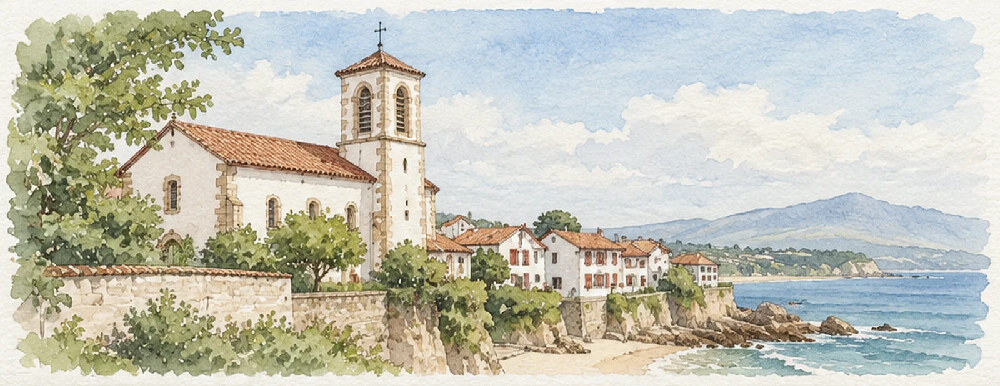
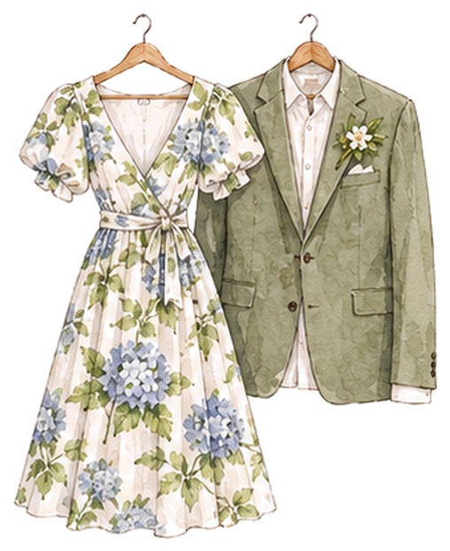
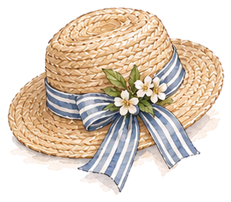
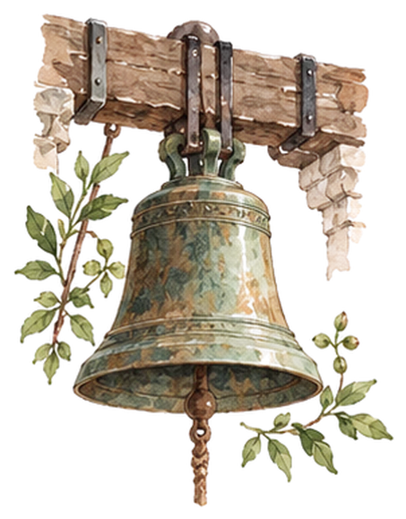
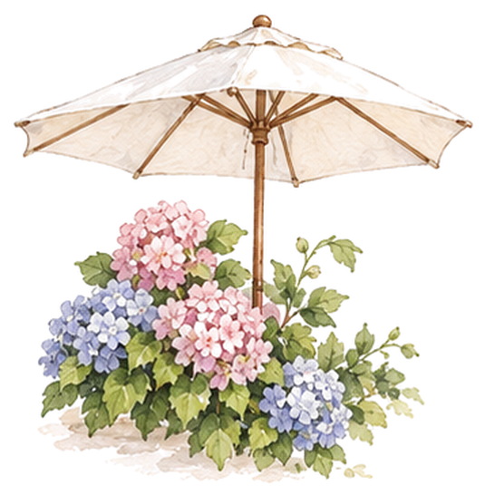

Samedi
12 juin
De Guéthary à Sare, le fil de la journée. Les horaires sont indicatifs : au Pays basque, on prend le temps.


-
14 h 30
Accueil sur le parvis
Retrouvons-nous devant l’église. Les places sont rares dans le village : venez un peu en avance, ou en covoiturage.
Église Saint-Nicolas, Guéthary -
15 h
La cérémonie
Messe de mariage sous les galeries de bois de 1636, accompagnée par un chœur d’hommes basque. Elle dure environ une heure.
Église Saint-Nicolas, Guéthary -
16 h 15
Photo de groupe, puis en route
Une grande photo sur les marches, puis les navettes partent du parvis à 16 h 30 et 16 h 50 pour Sare. Comptez 35 minutes par la route de la Rhune.
Parvis de l’église -
17 h 30
Le vin d’honneur
Txakoli, cidre et pintxos sous les tilleuls du parc. Les plus vaillants pourront tenter une partie de pelote sur le fronton.
Parc du domaine, Sare -
20 h
Le dîner
À table sur la terrasse, face à la Rhune et aux Pyrénées. Le menu tient compte de vos réponses sur les allergies et les régimes.
Terrasse du domaine -
23 h
Le bal
La piste s’ouvre dans la grande salle aux poutres de chêne. Fandango obligatoire, puis place à vos demandes.
Salle du domaine -
1 h
Les navettes du retour
Départs à 1 h, 2 h et 3 h vers le bourg de Sare et Saint-Jean-de-Luz. Inscrivez-vous en répondant à l’invitation, pour qu’on garde votre place.
Entrée du domaine
Bon à savoir

La tenue
Tenue de fête. Le parvis est pavé et le parc en herbe : préférez des talons larges, et gardez une étole pour la soirée.

Les enfants
Ils sont les bienvenus. À partir de 19 h, deux animatrices les attendent au domaine, avec un dîner rien que pour eux.

Une cérémonie débranchée
Gardons les téléphones dans la poche pendant la messe : notre photographe s’occupe de tout, et vous recevrez les photos.

S’il pleut
Une averse est toujours possible au pied de la Rhune. Des parapluies blancs vous attendront à l’église et au domaine.